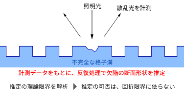
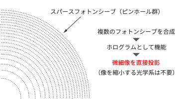
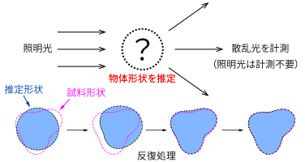
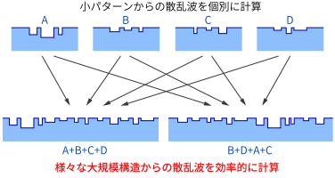
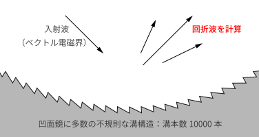
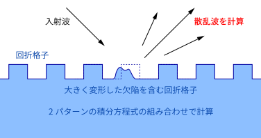
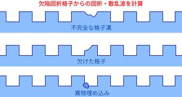

研究業績
これまでに発表された主な研究成果を紹介します。その他の業績はResearchmapをご覧ください
Researchmap（論文：44報／講演・口頭発表：75件）
Profile reconstruction of a local defect in a groove structure and the theoretical limit under the vector diffraction theory
Optics Express, 28(21), 30908-30927 (2020年10月)

回折格子の表面にある微小な欠陥の断面形状を、照射した光の散乱波から推定する方法を提案しています。光学顕微鏡で見ることのできる物体の限界は、回折限界として知られていますが、欠陥とその周囲で生じる散乱現象を解析すると、回折限界を超えて欠陥形状を推定できます。推定可能な形状とその理論限界について解析を行い、何パーセントの制度で推定可能かを予測する方法を示しています。
Lensless computer-generated hologram with wavelength-order resolution consisting of photon sieves
Journal of Optics, 22, 105606 (2020年9月)

スパースフォトンシーブと呼ばれる穴あき薄膜を用いて、微細なライン像を投影するホログラム（フォトンシーブホログラム）を提案しています。従来のホログラムで微細な像を投影するためには、縮小投影光学系などのレンズが必要でした。フォトンシーブホログラムは微細な像を直接生成できるため、光学系の構成が困難な紫外線やX線でも像を作ることができます
Reconstruction of scatterer shape from relative intensity of scattered field by using linearized boundary element method
IEICE Transactions on Electronics, E103-C(2), 30-38 (2020年2月)

微粒子に光を照射し、その散乱波から微粒子表面の形状を推定する方法を提案しています。従来は微粒子に照射する光の強度（明るさ）をあらかじめ計測する等の下準備が必要でしたが、本論文では、そのような準備をすることなく、形状を推定する方法を提案しています。計測中に照明の明るさが変動しても結果に影響しにくく、安定した計測が可能になります。
Field-stitching boundary element method for accurate and rapid vectorial diffraction analysis of large-sized one-dimensional diffractive optical elements
Optics Express, 26, 20023-20039 (2018年8月)

フォトマスクや回折光学素子などの表面には複雑な凹凸パターンが加工されています。これらの素子は、少ない種類の「小さなパターン」の組み合わせで構成されることがあります。本論文では、このような素子からの散乱波を効率的に計算するために、素子を構成する小さなパターンの散乱波を計算しておきます。目的の素子からの散乱波は、小さなパターンからの散乱波の組み合わせで計算できることになります。その際、小さなパターンからの散乱波をただ足し合わせただけでは、誤差が大きくなったり、パターンのつなぎ目で不整合が生じてしまいます。そこで、本研究ではstitching field(綴合波)という成分を付け加えて、不整合が生じないような工夫をしています。ちょうど鉄道模型の線路のパーツを組み合わせて多様で複雑なコースが作れるように、多様な凹凸パターンからの散乱波を簡単に計算できるようになります。
Fast actual-size vectorial simulation of concave diffraction gratings with structural randomness
Journal of the Optical Society of America A, 34(12), 2157-2164 (2017年12月)

差分界境界要素法と計算手順の工夫により、実サイズ回折格子をそのまま解析できるようになりました。本論文では、凹面鏡の表面に加工された回折格子からの回折波を計算しています。応用例として、回折格子の溝の不規則性に応じて回折波が弱くなる特性を定量的に解析しています。
Efficient Analysis of Diffraction Grating with 10000 Random Grooves by Difference-Field Boundary Element Method
IEICE Transactions on Electronics, E100C(1), 27-36 (2017年1月)

差分界境界要素法により、周期性が失われた回折格子からの散乱波を効率的に計算できるようになりました。本論文では計算手順を工夫し、不規則な溝が10000本加工された大規模な素子からの回折波を計算しています。通常、この規模の解析には大型計算機が必要ですが、本手法では一般的なパソコンでも大きな負荷をかけることなく解析ができるようになっています。
Efficient Scattering Analysis of Arbitrarily Shaped Local Defect in Diffraction Grating
IEICE Transactions on Electronics, E99C(1), 76-80 (2016年1月)

差分界境界要素法は、欠陥付き回折格子による電磁波（光）の散乱を効率的に計算できる手法です。しかし、この手法で用いられる積分方程式は欠陥周囲の形状に依存し、形状が変わるたびに積分方程式を導出する必要がありました。本論文では、欠陥の領域を分割して計算することで、基本的な数パターンの積分方程式の組み合わせのみで、様々な欠陥形状の計算に対応できるようにしました。
Expansion of the difference-field boundary element method for numerical analyses of various local defects in periodic surface-relief structures
Journal of the Optical Society of America A, 32(5), 751-763 (2015年5月)

欠陥のある回折格子からの光（電磁波）の散乱を効率よく計算する手法を提案しています。回折格子に欠陥が生じると、表面形状が周期的という前提が成り立たなくなり、必要とする計算資源が非常に多くなります。本論文では、差分界境界要素法という手法を用いて、演算量と消費メモリの双方を削減しています。(1)不完全な格子溝、(2)欠けた格子、(3)異物の埋め込み、の3種類の欠陥を具体例に挙げ、高精度な散乱波分布が計算できることを示しています。